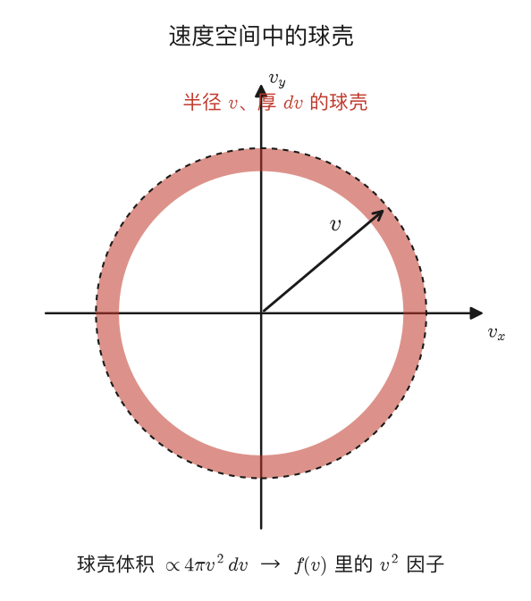
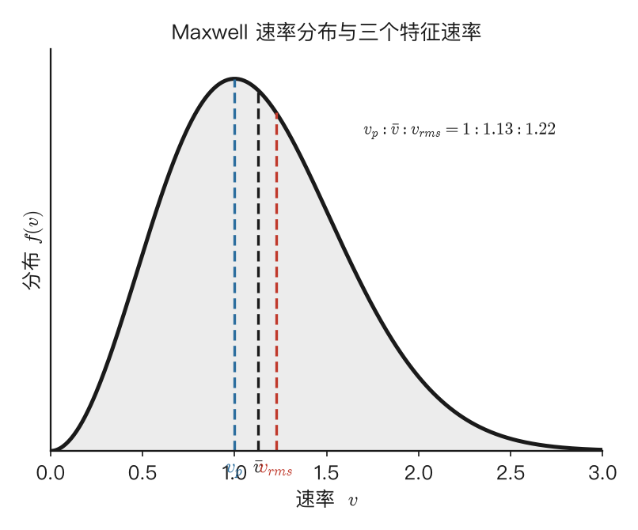
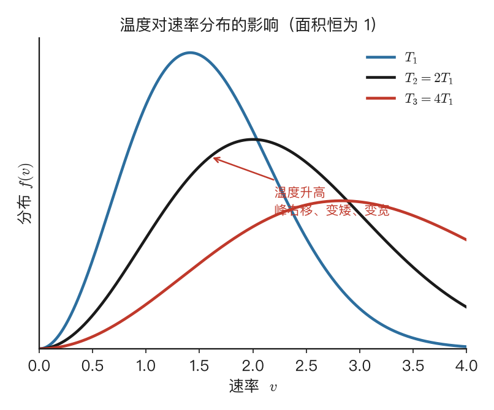
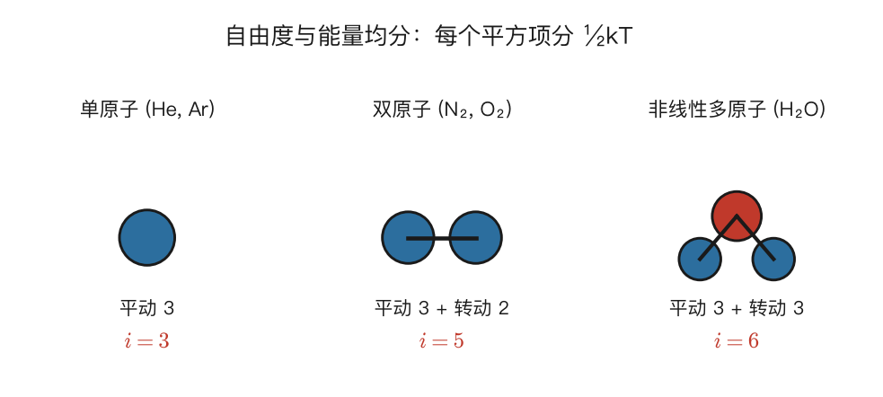
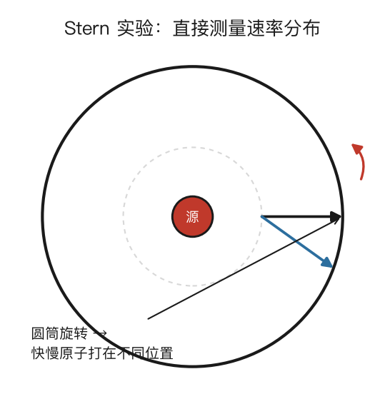

Maxwell-Boltzmann 分布
4.1 为什么要谈"分布"：从一个数到一条曲线
[!考试权重] ★★★ 本章是计算大题的重灾区。2024 第 4 题（15 分）考了非 Maxwell 分布（电子气 $f(v)=Av^2$）的归一化、特征速率、平均速率计算。掌握"分布函数→归一化→求平均"这套操作是关键。
第一章推导压强时，我们用过一个量——分子速率的平方平均值 $\overline{v^2}$，并由它得到了温度的微观意义。可那时我们悄悄回避了一个问题：分子的速率并不是都一样的。在平衡态下，有的分子快得惊人，有的慢得几乎不动，绝大多数则不快不慢。于是一个自然而然、也更深刻的问题浮出水面：这些速率到底是怎么分布的？速率落在某个范围内的分子占多大比例？ 回答这个问题的，就是本章的主角——Maxwell 速率分布律。
你可能会担心：$10^{23}$ 个分子各有各的速度，根本追踪不过来，谈何"分布"？但这恰恰又是大数的恩赐。单个分子下一刻多快完全随机，可海量分子的速率分布却稳定得可以写成一条精确的曲线。这就像你说不准教室里某一个同学多高，但只要人数足够多，"身高在 170–175 cm 之间的人占百分之几"却是一个确定且可预测的数。统计的力量，正在于把无数个体的不确定，汇成整体的确定。这一章我们就要把这条"速率的身高分布曲线"找出来，学会从它读出各种平均量，并由此打开统计物理一把极重要的钥匙——能量均分定理。
[要点]
- 平衡态下分子速率有快有慢，服从一个确定的分布，不是单一值。
- 大数效应：单个分子随机，但海量分子的速率分布稳定可预测。
- 本章目标：求出 Maxwell 速率分布 → 读出特征速率与平均量 → 引出能量均分定理。
4.2 速率分布函数：f(v) 到底是什么意思
要描述分布，先得给它一个数学载体——速率分布函数 $f(v)$。设系统有 $N$ 个分子，$f(v)$ 的定义是：速率落在 $v$ 到 $v+dv$ 这个小区间内的分子，占总分子数的比例为 $f(v)\,dv$。换句话说，这个区间里的分子数 $dN=Nf(v)\,dv$。所以 $f(v)$ 的物理意义是单位速率间隔内分子出现的概率密度——它本身不是比例，要乘上一段区间宽度 $dv$ 才是比例。这个"概率密度"的身份，是后面一切计算的基础，务必分清 $f(v)$ 和 $f(v)\,dv$ 的区别。
既然每个分子的速率都落在 $0$ 到 $\infty$ 之间某处，把所有区间的比例加起来必须等于 1，这就是归一化条件 $\int_0^\infty f(v)\,dv=1$。而一旦掌握了 $f(v)$，任何与速率有关的平均量都能用积分一网打尽：平均速率 $\overline v=\int_0^\infty v\,f(v)\,dv$，速率平方的平均 $\overline{v^2}=\int_0^\infty v^2 f(v)\,dv$，更一般地，任意函数 $g(v)$ 的平均值就是 $\overline{g(v)}=\int_0^\infty g(v)\,f(v)\,dv$。这种"用分布函数加权求平均"的套路，是统计物理最核心的操作，本章会反复使用。
[要点]
- 速率分布函数 $f(v)$：速率在 $(v,v+dv)$ 内的分子比例 $=f(v)\,dv$，即 $dN=Nf(v)\,dv$。
- $f(v)$ 是概率密度（要乘 $dv$ 才是比例）。归一化 $\int_0^\infty f(v)\,dv=1$。
- 求平均值的通法：$\overline{g(v)}=\int_0^\infty g(v)f(v)\,dv$。
4.3 Maxwell 速率分布律：长什么样，又从哪来
[!考试权重] ★★ 公式本身不需要从头推导（不会让你在考场上重推），但必须能写出来、能用它做积分。碰壁数公式 $\Gamma=\frac{1}{4}n\bar v$ 也是本章高频考点。
Maxwell 在 1860 年从统计力学的基本原理出发，给出了平衡态理想气体的速率分布函数：
$$\boxed{f(v)=4\pi\left(\frac{m}{2\pi kT}\right)^{3/2}v^2\exp\left(-\frac{mv^2}{2kT}\right)},$$
其中 $m$ 是单个分子质量，$T$ 是温度，$k$ 是玻尔兹曼常数。这个公式初看吓人，但只要把它拆成三块，每一块的物理含义都很清楚。中间的 $\left(m/2\pi kT\right)^{3/2}$ 是个归一化常数，唯一作用是保证全部比例加起来等于 1。真正决定曲线形状的是另外两个因子的竞争：前面的 $v^2$ 来自速度空间的几何（下面就解释），它压低了低速端——速率越接近零，可分配的"方向状态"越少，故 $f(v)\to0$；后面的 $\exp(-mv^2/2kT)$ 是大名鼎鼎的玻尔兹曼因子，它压低了高速端——速率越大、动能越高，越难获得，故 $f(v)$ 也趋于零。两头都被压下去，曲线必然在中间某处鼓起一个峰，那个峰就对应最概然速率。
那个 $v^2$ 因子到底从哪来？这要从速度分布说到速率分布。完整推导需要统计力学，但关键思路只有四步。第一步，假设三个方向独立：$v_x,v_y,v_z$ 的分布互不影响，总分布等于三者之积。第二步，要求各向同性：分布只能依赖速率大小 $v=\sqrt{v_x^2+v_y^2+v_z^2}$，不能偏爱任何方向。神奇的是，"独立"加"各向同性"这两个条件合在一起，数学上唯一能满足的形式就是高斯分布——每个分量 $v_x$ 服从均值为零、方差为 $kT/m$ 的正态分布 $g_x(v_x)=(m/2\pi kT)^{1/2}\exp(-mv_x^2/2kT)$。第三步，三维速度分布就是三个高斯之积 $g(v_x,v_y,v_z)=(m/2\pi kT)^{3/2}\exp(-mv^2/2kT)$。第四步，也是 $v^2$ 的来源——从速度分布转到速率分布。所有速率在 $v$ 到 $v+dv$ 之间的分子，在速度空间里对应着一个半径为 $v$、厚度为 $dv$ 的球壳，其体积是 $4\pi v^2\,dv$。于是 $f(v)\,dv=g(v_x,v_y,v_z)\cdot4\pi v^2\,dv$，那个 $4\pi v^2$ 正是球壳的"面积因子"。

[要点]
- Maxwell 速率分布 $f(v)=4\pi\left(\dfrac{m}{2\pi kT}\right)^{3/2}v^2 e^{-mv^2/2kT}$。
- 形状 = 两因子竞争：$v^2$（球壳几何）压低低速端，玻尔兹曼因子 $e^{-mv^2/2kT}$ 压低高速端，中间起峰。
- 推导思路：分量独立 + 各向同性 ⟹ 各分量高斯分布；转速率分布时乘球壳体积 $4\pi v^2\,dv$（$v^2$ 因子的来源）。
4.4 三个特征速率：vₚ < v̄ < v_rms
[!考试权重] ★★★ 三个速率公式必须秒写；它们之间的大小关系和比值是选择题常客。
有了 $f(v)$，就能从这条曲线上读出三个最常用、也最常考的特征速率。最概然速率 $v_p$ 是 $f(v)$ 取极大值处的速率，对应曲线的峰顶，令 $f'(v_p)=0$ 解得 $v_p=\sqrt{2kT/m}=\sqrt{2RT/M}$。平均速率 $\bar v$ 是所有分子速率的算术平均 $\bar v=\int_0^\infty vf(v)\,dv=\sqrt{8kT/\pi m}=\sqrt{8RT/\pi M}$。方均根速率 $v_{rms}$ 是速率平方平均再开方 $v_{rms}=\sqrt{\overline{v^2}}=\sqrt{3kT/m}=\sqrt{3RT/M}$——它和能量直接挂钩，因为 $\tfrac12 mv_{rms}^2=\tfrac32 kT$。

三者的大小关系恒为 $v_p<\bar v [要点] 上一节的三个公式不是凭空写下的，算它们要用到一系列高斯积分。这些积分在热学和统计物理里反复出现，掌握它们等于拿到一把万能钥匙。最基本的是 $I_0=\int_0^\infty e^{-ax^2}\,dx=\tfrac12\sqrt{\pi/a}$。带 $x^n$ 的记为 $I_n=\int_0^\infty x^n e^{-ax^2}\,dx$，常用值有 $I_1=\tfrac{1}{2a}$，$I_2=\tfrac14\sqrt{\pi/a^3}$，$I_3=\tfrac{1}{2a^2}$，$I_4=\tfrac38\sqrt{\pi/a^5}$。它们之间有个漂亮的递推 $I_{n+2}=-\dfrac{d}{da}I_n$——对参数 $a$ 求一次导就降两阶，记住一两个就能推出其余。 拿平均速率 $\bar v$ 练手。$\bar v=\int_0^\infty vf(v)\,dv=4\pi(m/2\pi kT)^{3/2}\int_0^\infty v^3 e^{-mv^2/2kT}\,dv$。令 $a=m/2kT$，需要的是 $I_3=\int_0^\infty v^3 e^{-av^2}\,dv=\tfrac{1}{2a^2}$，代入并化简，$4\pi(a/\pi)^{3/2}\cdot\tfrac{1}{2a^2}=\tfrac{2}{\sqrt\pi}\sqrt{2kT/m}=\sqrt{8kT/\pi m}$，正是上节的结果。再看最概然速率 $v_p$，它是 $f(v)$ 的极大点。把 $f(v)=Cv^2 e^{-av^2}$ 求导，$f'(v)=Cve^{-av^2}(2-2av^2)$，令它为零（$v\neq0$），得 $2-2av_p^2=0$，即 $v_p=1/\sqrt a=\sqrt{2kT/m}$。同理用 $I_4$ 可算出 $\overline{v^2}$ 进而得 $v_{rms}=\sqrt{3kT/m}$。整套流程就是"代分布 → 凑成高斯积分 → 查表化简"，熟练之后非常机械。 [要点] Maxwell 分布不是死的，温度一变它就跟着变形，而变形的规律很有物理味道。当温度升高时，三件事同时发生：峰值右移（因为 $v_p\propto\sqrt T$，温度高分子动得快），曲线变宽（速率分布的范围展开），峰值降低（由于归一化要求曲线下面积恒为 1，变宽就必然变矮）。一句话，温度越高，分布越"散"——快分子和慢分子的比例都增加，整条曲线朝高速端摊开。 
4.5 高斯积分：把特征速率算出来
4.6 温度与质量：分布曲线怎么变
分子质量的影响方向相反但道理相通。同一温度下，$v_p\propto1/\sqrt m$，所以轻分子的分布更宽、更偏向高速端，重分子则又窄又靠左。算一下就有意思了：氢分子（$M=0.002$）的最概然速率是氮分子（$M=0.028$）的 $\sqrt{28/2}=\sqrt{14}\approx3.7$ 倍。这个看似抽象的比例，解释了一个真实的天文现象——为什么地球大气中几乎没有氢气：氢分子太轻、跑得太快，速率分布的高速尾巴轻易就触及地球逃逸速度（11.2 km/s），日积月累便逃逸殆尽。重一些的氮气氧气则被牢牢拽住，于是我们今天才有空气可呼吸。
[要点]
- 温度升高：峰值右移（$v_p\propto\sqrt T$）、变宽、变矮（面积恒为 1）。
- 同温下轻分子分布更宽更偏高速（$v_p\propto1/\sqrt m$）。
- 应用：氢分子太快易达逃逸速度，故地球大气几乎没有氢气。
4.7 能量均分定理：每个"平方项"分到 ½kT
[!考试权重] ★★★ 能量均分是求内能、热容、$\gamma$ 的唯一工具。2024 第 3 题用到氦气 $C_{V,m}=\frac{3}{2}R$，第 2 题用到氧气 $C_{V,m}=\frac{5}{2}R$。自由度表必须背住。
前面我们一直在谈平动速率。但分子不只会平动，还会转动、振动，要把这些自由度的能量都算清楚，就需要统计物理里一条极其优美的普适规律——能量均分定理。先讲清"自由度"。一个分子的运动方式可以拆成若干独立的"模式"，每一个独立模式就是一个自由度：平动有 3 个（沿 $x,y,z$ 三个方向），转动的数目取决于分子形状，振动则每个模式贡献 2 个（动能加势能各一）。

各类分子的自由度可以列成一张表（做题常查）：
| 分子类型 | 例子 | 平动 | 转动 | 振动 | 总自由度 $i$ |
|---|---|---|---|---|---|
| 单原子 | He, Ar | 3 | 0 | 0 | 3 |
| 双原子（刚性） | N₂, O₂ | 3 | 2 | 0 | 5 |
| 双原子（含振动） | N₂ 高温 | 3 | 2 | 2 | 7 |
| 直线型多原子 | CO₂ | 3 | 2 | 室温部分激活 | 5(+) |
| 非线性多原子 | H₂O, NH₃ | 3 | 3 | — | 6+ |
这里要专门提醒 CO₂：它是直线型分子，严格说转动自由度只有 2（绕分子轴转动不计），刚性时 $i=5$；但它的弯曲振动在室温下已部分激活，使有效热容偏高，实测 $\gamma\approx1.30$。考试惯例常把"多原子分子"统一按 $i=6$ 处理，做题时以题目/教材给的自由度为准。室温下双原子分子的振动通常被"冻结"，所以一般取 $i=5$（4.9 节会用量子力学解释这个"冻结"）。
能量均分定理的表述异常简洁：在温度 $T$ 的平衡态下，分子能量表达式里每一个平方项（二次型）的平均值都等于 $\tfrac12 kT$。所谓"平方项"，是指能量里每一个形如 $\tfrac12(\text{某量})^2$ 的项——平动动能 $\tfrac12 mv_x^2$、转动动能 $\tfrac12 I\omega_x^2$、振动势能 $\tfrac12\kappa x^2$、振动动能 $\tfrac12\mu\dot x^2$，统统每项分到 $\tfrac12 kT$，与这个量具体是什么物理量无关。于是有 $i$ 个自由度（即 $i$ 个平方项）的分子，平均能量就是 $\overline\varepsilon=\tfrac{i}{2}kT$。把它乘上分子数，就得到理想气体的内能
$$\boxed{U=N\cdot\frac{i}{2}kT=\frac{i}{2}nRT},$$
进而定容摩尔热容 $C_{V,m}=\tfrac{i}{2}R$，定压摩尔热容（Mayer 关系）$C_{p,m}=\tfrac{i+2}{2}R$，热容比 $\gamma=\tfrac{i+2}{i}$。把这串结果和实验值并排，吻合程度一目了然，这正是能量均分定理威力的明证：
| 气体 | $i$ | $C_{V,m}$ | $C_{p,m}$ | 理论 $\gamma$ | 实测 $\gamma$ |
|---|---|---|---|---|---|
| He | 3 | $\tfrac32 R=12.5$ | $\tfrac52 R=20.8$ | 1.67 | 1.66 |
| N₂ | 5 | $\tfrac52 R=20.8$ | $\tfrac72 R=29.1$ | 1.40 | 1.40 |
| CO₂ | 6 | $3R=24.9$ | $4R=33.3$ | 1.33 | 1.30 |
（热容单位 J/(mol·K)。单原子、双原子吻合得近乎完美；CO₂ 的小偏差源于它是直线型分子、室温下弯曲振动又部分激活，使有效 $i$ 与简单的 6 略有出入——但数量级与定性趋势依然准确。）
[要点]
- 自由度 $i$：平动 3，双原子转动 2，每个振动模式 2（室温常冻结）。CO₂ 是直线型（转动 2）。
- 能量均分定理：平衡态下每个平方项平均能量 $=\tfrac12 kT$；分子平均能量 $\overline\varepsilon=\tfrac{i}{2}kT$。
- 由此 $U=\tfrac{i}{2}nRT$，$C_{V,m}=\tfrac{i}{2}R$，$C_{p,m}=\tfrac{i+2}{2}R$，$\gamma=\tfrac{i+2}{i}$。
4.8 能量均分为什么是 ½kT：一段简短证明
为什么偏偏是 $\tfrac12 kT$、而且与具体物理量无关？这背后有一段干净的证明，值得看一遍。考虑某个自由度，其能量是平方形式 $\varepsilon=\tfrac12\alpha q^2$（$q$ 是某个广义坐标或动量，$\alpha$ 是常数）。在温度 $T$ 下，$q$ 取某值的概率由玻尔兹曼因子给出 $P(q)\propto\exp(-\varepsilon/kT)=\exp(-\alpha q^2/2kT)$。于是这个自由度的平均能量是一个加权平均
$$\overline\varepsilon=\frac{\int_{-\infty}^\infty\tfrac12\alpha q^2\,e^{-\alpha q^2/2kT}\,dq}{\int_{-\infty}^\infty e^{-\alpha q^2/2kT}\,dq}.$$
用两个高斯积分 $\int_{-\infty}^\infty q^2 e^{-aq^2}\,dq=\tfrac12\sqrt{\pi/a^3}$ 和 $\int_{-\infty}^\infty e^{-aq^2}\,dq=\sqrt{\pi/a}$，令 $a=\alpha/2kT$，分子分母一比，$\overline\varepsilon=\tfrac14\alpha/a=\tfrac14\alpha\cdot\tfrac{2kT}{\alpha}=\tfrac12 kT$。结果里 $\alpha$ 彻底消失了——无论这个平方项前面的系数是质量、转动惯量还是弹性系数，最终都分到同样的 $\tfrac12 kT$。这正是"均分"二字的精髓：能量在所有平方自由度之间一视同仁地平摊，不偏不倚。
[要点]
- 设自由度能量 $\varepsilon=\tfrac12\alpha q^2$，$q$ 按玻尔兹曼因子 $e^{-\alpha q^2/2kT}$ 分布。
- 用高斯积分算加权平均，系数 $\alpha$ 约掉，恒得 $\overline\varepsilon=\tfrac12 kT$。
- "均分"= 能量在所有平方自由度间一视同仁平摊。
4.9 能量均分的局限：热容为什么会"掉下去"
能量均分定理是经典统计力学的成果，它有一个直接而强硬的预言：热容是常数，与温度无关。可实验偏偏不买账。氢气的定容热容在低温时约 $\tfrac32 R$（仿佛只有平动），中温时升到约 $\tfrac52 R$（平动加转动），高温时才接近 $\tfrac72 R$（再加上振动）——自由度像是随着温度"逐级解冻"。固体的热容也类似，高温趋于 $3R$（Dulong-Petit 定律），低温却一路趋于零。经典理论对这种"自由度冻结/激活"完全无能为力，它只会死板地给出一个常数。
破解之道在量子力学。每个自由度其实有一个特征能量间距 $\Delta\varepsilon$。当 $kT\gg\Delta\varepsilon$ 时，热运动的能量足以轻松跨过这个间距，该自由度被充分激活，经典结果成立；当 $kT\ll\Delta\varepsilon$ 时，热运动能量不够、跨不过间距，该自由度就被"冻结"，对热容毫无贡献。三类自由度的间距差别悬殊：振动的间距最大（约 0.1–0.5 eV），所以室温（$kT\approx0.025$ eV）下通常冻结；转动间距小得多（约 $10^{-3}$ eV），室温下充分激活；平动间距极小、近乎连续，永远激活。这就解释了为什么室温双原子气体取 $i=5$ 而非 7。本课程除非特别说明，默认使用经典的能量均分结果，但你要知道它的边界在哪。
[要点]
- 经典能量均分预言热容为常数，但实验显示热容随温度逐级上升（自由度解冻）。
- 量子解释：每自由度有能量间距 $\Delta\varepsilon$；$kT\gg\Delta\varepsilon$ 激活，$kT\ll\Delta\varepsilon$ 冻结。
- 振动间距大（室温冻结），转动小（室温激活），平动近连续（永远激活）→ 室温双原子 $i=5$。
4.10 玻尔兹曼因子：比速率分布更普遍的东西
Maxwell 分布给的是速率 $v$ 的分布。但我们也可以换个视角，问"动能为 $\varepsilon=\tfrac12 mv^2$ 的分子有多少"。做个变量替换（$\varepsilon=\tfrac12 mv^2$，$d\varepsilon=mv\,dv$）代进 Maxwell 分布，就得到能量分布函数 $f(\varepsilon)=\dfrac{2\pi}{(\pi kT)^{3/2}}\sqrt\varepsilon\,e^{-\varepsilon/kT}$。注意其中那个指数因子 $e^{-\varepsilon/kT}$——它就是玻尔兹曼因子，而且它的意义远远超出气体速率本身。
玻尔兹曼因子说的是一条统计物理里无处不在的普遍规律：在温度 $T$ 的平衡态下，一个系统处于能量为 $\varepsilon$ 的状态的概率正比于 $e^{-\varepsilon/kT}$。能量越高，概率越低；温度越高，高能态的概率相对上升（指数衰减变缓）；而 $kT$ 扮演着一个"能量尺度"的角色——比 $kT$ 大得多的能量几乎不可能出现。从气体速率分布，到固体里的缺陷浓度，到半导体里的载流子，到化学反应的速率，玻尔兹曼因子一次次现身，是统计物理最核心的结论之一。Maxwell 分布，某种意义上只是它在理想气体速率上的一个具体化身。
[要点]
- 换到能量视角，Maxwell 分布变成 $f(\varepsilon)\propto\sqrt\varepsilon\,e^{-\varepsilon/kT}$。
- 玻尔兹曼因子 $e^{-\varepsilon/kT}$：平衡态下处于能量 $\varepsilon$ 状态的概率 $\propto e^{-\varepsilon/kT}$。
- $kT$ 是"能量尺度"；玻尔兹曼因子在统计物理中无处不在，Maxwell 分布只是它的一个化身。
4.11 Maxwell 分布的实验验证
理论再漂亮也要经得起实验检验。1920 年，Otto Stern 设计了一个直接测量分子速率分布的巧妙实验。其原理是：加热一个金属炉让金属原子蒸发，原子从小孔射出、经狭缝准直成一束，再让它沉积到一个旋转圆柱体的内壁上。由于圆柱体在转，不同速率的原子飞越同样距离所花的时间不同——快原子飞得快、圆柱体只转过一点点，它就打在偏移小的位置；慢原子飞得慢、圆柱体已转过较大角度，它就落在偏移大的地方。于是把不同位置沉积层的厚度测出来，就能反推出速率分布。

实验结果与 Maxwell 分布的预言相符。后来 Zartman-Ko（1930 年代）用旋转的开槽圆柱体代替准直狭缝，能更精确地区分不同速率，给出了对 Maxwell 分布更定量的验证。至此，这条从纯统计推理得出的分布律，被牢牢地钉在了实验事实上。
[要点]
- Stern 实验（1920）：旋转圆筒上，快慢原子因飞行时间不同落在不同位置 → 反推速率分布。
- 结果与 Maxwell 分布一致；Zartman-Ko 用旋转开槽圆筒给出更定量的验证。
4.12 碰壁数与泄流
[!考试权重] ★★ 碰壁数公式 $\Gamma=\frac{1}{4}n\bar v$ 是一个独立考点，在复习课中被反复强调。
碰壁数
单位时间内碰撞单位面积器壁的分子数（碰壁频率）：
$$\boxed{\Gamma = \frac{1}{4}n\bar v}$$
其中 $n$ 是分子数密度，$\bar v$ 是平均速率。$1/4$ 因子的来源：只有约一半分子朝壁面飞（另一半背离），而这些分子的平均法向速度分量经过积分恰好是 $\bar v/2$，合起来就是 $1/4$。
泄流
如果在器壁上开一个小孔（面积 $\Delta\sigma$），单位时间逸出的分子数：
$$\Delta N = \Gamma \cdot \Delta\sigma = \frac{1}{4}n\bar v\cdot\Delta\sigma$$
一个重要结论：泄流出来的分子的平均速率并不等于容器内的 $\bar v$。由于快分子碰壁频率更高（速率越大、单位时间走得越远、撞壁越频繁），泄流分子偏向高速，其平均速率为 $\overline{v_{泄流}} = \frac{3\pi}{8}\bar v \approx 1.18\bar v$。
[要点]
- 碰壁数 $\Gamma = \frac{1}{4}n\bar v$：单位时间、单位面积碰壁分子数。
- 泄流 $\Delta N = \Gamma\cdot\Delta\sigma$；泄流分子平均速率 $>$ 容器内平均速率。
4.13 例题精讲与真题实战
三道题对应本章主要考法：特征速率计算、能量均分求热容、用分布函数比较。
例题 1：三个特征速率
题目：求 $T=300$ K 时氧气分子（$M=32\times10^{-3}$ kg/mol）的最概然速率、平均速率和方均根速率。
思路：三个公式套同一组 $R,T,M$ 即可，注意系数 $\sqrt2,\sqrt{8/\pi},\sqrt3$ 的区别。
解答：$v_p=\sqrt{2RT/M}=\sqrt{2\times8.314\times300/0.032}\approx395$ m/s；$\bar v=\sqrt{8RT/\pi M}=\sqrt{8\times8.314\times300/(\pi\times0.032)}\approx446$ m/s；$v_{rms}=\sqrt{3RT/M}=\sqrt{3\times8.314\times300/0.032}\approx484$ m/s。三者满足 $v_p<\bar v 题目：$2$ mol 双原子理想气体（室温，$i=5$）在 $T=300$ K。求其内能、定容摩尔热容、定压摩尔热容与热容比 $\gamma$。 思路：直接套能量均分的成套结论 $U=\tfrac{i}{2}nRT$、$C_{V,m}=\tfrac{i}{2}R$、$C_{p,m}=\tfrac{i+2}{2}R$、$\gamma=\tfrac{i+2}{i}$。 解答：内能 $U=\tfrac52 nRT=\tfrac52\times2\times8.314\times300\approx1.25\times10^4$ J。$C_{V,m}=\tfrac52 R\approx20.8$ J/(mol·K)，$C_{p,m}=\tfrac72 R\approx29.1$ J/(mol·K)，$\gamma=7/5=1.40$。 题目：某理想气体在 $T_1=300$ K 时最概然速率为 $v_{p1}$。若把温度升到 $T_2=1200$ K，最概然速率变为原来的几倍？平均平动动能又变为几倍？ 思路：$v_p\propto\sqrt T$，平均平动动能 $\overline{\varepsilon_k}=\tfrac32 kT\propto T$，两者对温度的依赖不同，正是本题考点。 解答：$v_{p2}/v_{p1}=\sqrt{T_2/T_1}=\sqrt{1200/300}=\sqrt4=2$，最概然速率变为 2 倍。平均平动动能 $\overline{\varepsilon_k}\propto T$，变为 $1200/300=4$ 倍。注意速率只翻倍而动能翻四倍，因为动能正比于速率平方。 题目：电子气中 N 个自由电子，速率在 $v\sim v+dv$ 间的概率为 $dN/N = Av^2\,dv$（$0\leq v\leq v_0$），$v>v_0$ 时为 0。求：(1) $A$；(2) 最概然速率 $v_p$、平均速率 $\bar v$、方均根速率；(3) 速率大于 $v_0/2$ 的电子数；(4) 速率在 $0\sim v_0/2$ 间的电子的平均速率。 这道题考的就是"分布函数→归一化→求平均"的标准操作，只不过分布函数不是 Maxwell 的而是一个简单的抛物线型。 解答 (1)：归一化 $\int_0^{v_0} Av^2\,dv = A\cdot\frac{v_0^3}{3} = 1$ → $\boxed{A = 3/v_0^3}$ 解答 (2)： 解答 (3)：速率在 $v_0/2\sim v_0$ 间的电子比例： $$\int_{v_0/2}^{v_0}\frac{3}{v_0^3}v^2\,dv = \frac{3}{v_0^3}\cdot\frac{v_0^3 - (v_0/2)^3}{3} = 1 - \frac{1}{8} = \frac{7}{8}$$ 速率大于 $v_0/2$ 的电子数 = $\frac{7}{8}N$。 解答 (4)：速率在 $0\sim v_0/2$ 间的平均速率 = 该区间内 $\int v\,dN$ 除以该区间内的 $\int dN$： $$\bar v_{0\to v_0/2} = \frac{\int_0^{v_0/2} v\cdot\frac{3}{v_0^3}v^2\,dv}{\int_0^{v_0/2}\frac{3}{v_0^3}v^2\,dv} = \frac{\frac{3}{v_0^3}\cdot\frac{(v_0/2)^4}{4}}{\frac{3}{v_0^3}\cdot\frac{(v_0/2)^3}{3}} = \frac{3v_0/64}{1/8} = \frac{3v_0}{8}$$ 考点总结：这道题不需要知道 Maxwell 分布的具体形式，考的纯粹是"给你一个分布函数，你能不能做归一化、求平均值、求区间概率"的操作能力。课件复习部分有一道几乎一模一样的"费米速率"例题。 同温下轻分子和重分子的速率分布相同吗？ 不同。速率分布通过 $f(v)$ 依赖于 $m/T$，轻分子的分布更宽、峰更靠右（速率更大）。但它们的平均平动动能相同，都是 $\tfrac32 kT$——重分子只是动得慢，动能并不小。 某个分子的速率能超过 $v_{rms}$ 吗？ 当然能。$v_{rms}$ 只是一个统计平均值，Maxwell 分布的尾巴一直延伸到无穷，总有极少数分子速率极高，只是概率随 $v$ 增大而指数衰减。 气体达到平衡后，每个分子的速率就固定不变了吗？ 不是。分子无时无刻不在碰撞，每次碰撞后个别分子的速率都在变。不变的是整体分布——任何时刻"速率在 $v\sim v+dv$ 内的分子比例"保持恒定，这才是"统计平衡"的含义。 能量均分里"平方项"的要求有多严？ 非常严。能量必须是某变量的二次函数（$\varepsilon\propto q^2$），均分定理才适用；若能量是 $|q|$ 或 $q^4$ 的形式就不成立。幸运的是大部分基本物理量（平动动能、转动动能、谐振子势能）都是二次型。 考前最后扫一遍。★ 必背直接套，○ 理解即可。 Maxwell 速率分布 ★ $$f(v)=4\pi\left(\frac{m}{2\pi kT}\right)^{3/2}v^2 e^{-mv^2/2kT},\qquad \int_0^\infty f(v)\,dv=1$$ 三个特征速率 ★ $$v_p=\sqrt{\frac{2kT}{m}}=\sqrt{\frac{2RT}{M}},\quad \bar v=\sqrt{\frac{8kT}{\pi m}}=\sqrt{\frac{8RT}{\pi M}},\quad v_{rms}=\sqrt{\frac{3kT}{m}}=\sqrt{\frac{3RT}{M}}$$ 比值恒为 $v_p:\bar v:v_{rms}=1:1.13:1.22$。 能量均分定理 ★ $$\overline\varepsilon=\frac{i}{2}kT,\qquad U=\frac{i}{2}nRT,\qquad C_{V,m}=\frac{i}{2}R,\qquad \gamma=\frac{i+2}{i}$$ 每个平方项分 $\tfrac12 kT$。室温：单原子 $i=3$、双原子 $i=5$、（非线性）多原子 $i=6$。 玻尔兹曼因子 ○：$P(\varepsilon)\propto e^{-\varepsilon/kT}$。 这一章我们把第一章那个偷偷回避的问题补上了：平衡态下分子速率不是一个数，而是一整条 Maxwell 分布曲线。这条曲线由两个因子的竞争塑形——球壳几何带来的 $v^2$ 压低低速端，玻尔兹曼因子 $e^{-mv^2/2kT}$ 压低高速端，中间鼓起一个峰。从曲线上我们读出三个特征速率 $v_p<\bar v例题 2：能量均分求内能与热容
例题 3：最概然速率与温度的关系
🎯 真题实战：2024 计算第 4 题（15 分）
4.13 概念辨析
4.14 公式速查卡
4.15 本章小结
核心概念
一句话抓住它
速率分布函数
$f(v)\,dv$ = 速率在 $(v,v+dv)$ 内的分子比例；概率密度，归一化为 1
Maxwell 分布
$v^2$ 因子（球壳）× 玻尔兹曼指数衰减；中间起峰
三个特征速率
$v_p<\bar v
温度/质量影响
$T$ 升高分布右移变宽变矮；轻分子更宽更偏高速
自由度
平动 3、双原子转动 2、振动每模 2（室温冻结）
能量均分定理
每平方项分 $\tfrac12 kT$；$U=\tfrac{i}{2}nRT$
玻尔兹曼因子
$e^{-\varepsilon/kT}$：高能态概率指数衰减，统计物理无处不在
经典局限
解释不了低温热容下降，需量子（自由度冻结）